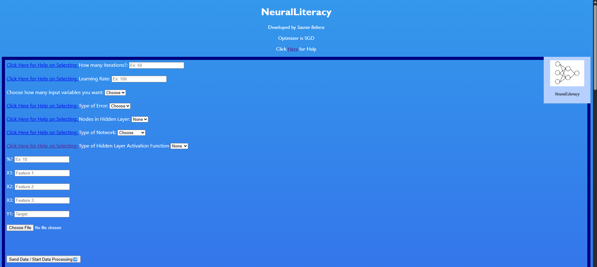
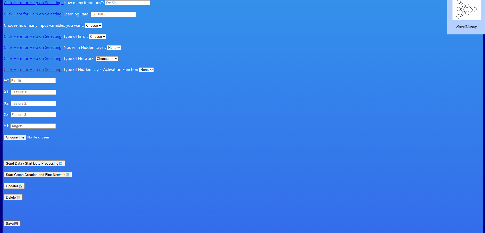
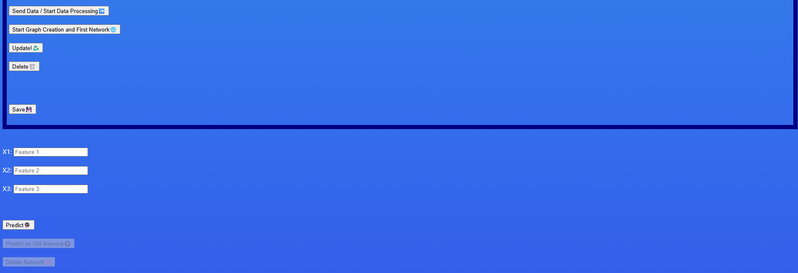

First, Identify your Architecture and Hyperparameters. You can use the Links for Help!
Then Load your Data. This can be in Manual Form or CSV Format. For CSV Format, do not include headers.
For Manual Format, Input Each Variable At a Time, Following Input Choice, and click 'Send Data / Start Data Processing'.
If you used CSV File Upload, click 'Send Data / Start Data Processing'.
If using the manual upload, if you made a mistake, click 'Delete' to remove the most recent datapoint.
In the Textbox that asks '%?', select for how many times you want the Cost vs. Iterations to show. If your iterations are 1000 and you chose for every 20, it will show 50 times.


Secondly, Click 'Start Graph Creation and First Network'.
Behold, Cost vs. Iterations Graph! If you don't like it, click 'Update!'.
Want to make Predictions? Use the Feature Input Textboxes and click 'Predict'.
Like the Network? Click 'Save'.
On refresh, the 'Predict on Old Network' and 'Delete Network' buttons will be Open.
You can make the same predictions using the same Textbox Feature Inputs!
Want to make a new Network? Click 'Delete Network' to start again!